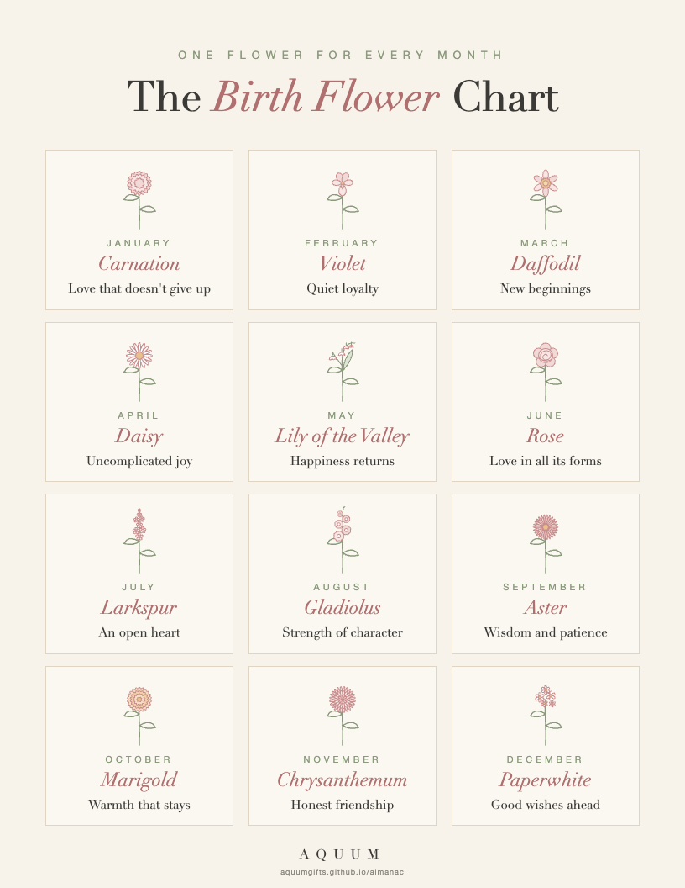

Birth flowers, month by month
Every month has a flower, and every flower has a meaning worth giving. These guides explain each one and help you choose a gift that actually says something.

Free printable birth flower chartAll twelve months, their flowers and what each one means, on one page. Download the PDF.Start here
Find a flower, print the chart, learn the meanings.
- Free Printable Birth Flower Chart: All 12 Months and Their Meanings
Download a free printable birth flower chart with all twelve months, their flowers and what each one means. Letter size, ready to print or frame.
- Free Printable Birth Flower Gift Tags: All 12 Months, Ready to Cut
Free printable birth flower gift tags: twelve tags, one per month, each with its flower and meaning and a line for To and From. Print, cut and tie on.
- Free Printable Birth Flower Birthday Cards: One for Every Month
Free printable birthday cards with each month's birth flower and its meaning. Twelve cards, four per page, sized for standard A2 envelopes.
- Free Birth Flower Coloring Pages: All 12 Months, Ready to Print
Free printable birth flower coloring pages: one page for every month's flower, plus a sheet with all twelve. Bold, simple lines for kids and adults.
- Birth Flower Finder: Enter a Birthday, Get the Flower and Its Meaning
Enter any birthday and find the birth flower, its second flower and what each one means. A quick birth flower calculator for gifts, cards and tattoos.
- What Is My Birth Flower? Find Yours by Birthday Month
What is my birth flower? Find your birth flower by the month you were born, what it means, and your month's second flower.
- Birth Flower Tattoo Ideas: Meanings by Month and How to Combine Them
Birth flower tattoo ideas for every month: what each flower means, how to combine family birth flowers in one design, and what to bring to your artist.
- Birth Flowers by Month: Meanings and Gift Ideas for All 12
Every month's birth flower and what it means, with gift ideas that fit the person, not just the date. A complete guide from January to December.
- Second Birth Flowers by Month: The Other Flower of Every Month
Most months have two birth flowers. The second flower of each month, what it means, and when to choose it over the first.
- Birth Flower Color Meanings: What Each Color Says Before You Choose
What birth flower colors mean: the rose, carnation and chrysanthemum by color, which colors to avoid, and how to pick the right one for a gift.
Christmas and other holidays
Personal gifts for Christmas, Valentine's Day, Mother's Day and more.
- Birth Flower Christmas Gifts: A Personal Present for Everyone on Your List
Birth flower Christmas gift ideas for mom, your partner, friends, teachers and nurses, with what each month's flower says and when to order.
- Meaningful Christmas Gifts for Her: Personal Ideas That Aren't Generic
Meaningful Christmas gift ideas for her, whether she's your mom, partner, sister or best friend: personal gifts built around her birth flower and what it says.
- Thanksgiving Hostess Gift Ideas: The Chrysanthemum and Other Thank-Yous
Thanksgiving hostess gift ideas with meaning: why the chrysanthemum is the season's flower, and small gifts that say thank you for having us.
- Gifts for the Woman Who Has Everything: Give Her a Meaning, Not a Thing
What to give the woman who has everything: small, personal gifts built around her birth flower and its meaning, and what to write in the card.
- Secret Santa Gift Ideas Under $30 That Feel Personal
Secret Santa gift ideas under $30 that don't feel generic: how to make a small gift personal with one fact, their birth month, plus what to write on the tag.
- Valentine's Day Birth Flower Gifts: Something Better Than Red Roses
Valentine's Day gift ideas built around your partner's birth flower: the romantic meanings, the violet for February, and gifts that last longer than roses.
- Mother's Day Birth Flower Gifts: Her Flower, and Her Children's
Mother's Day gift ideas built around birth flowers: her own flower, a family set with her children's flowers, and the carnation's link to the holiday.
Birthdays
A gift that belongs to their month.
- Birthday Gift Ideas by Month: A Personal Gift for Every Birth Month
Birthday gift ideas for every month, built around each birth flower and its meaning, plus the months whose birthdays get lost in the holidays.
- October Birthday Gift Ideas: Warm, Personal and Not Halloween
Gift ideas for an October birthday that feel personal, not seasonal: start with the marigold, October's birth flower, and what it means.
- November Birthday Gift Ideas That Don't Get Lost in Thanksgiving
November birthdays sit right next to Thanksgiving. Gift ideas that keep the birthday special, starting with the chrysanthemum, November's birth flower.
- December Birthday Gift Ideas That Aren't Christmas Gifts
December birthdays get lost in the holidays. Gift ideas that feel like a real birthday gift, starting with December's birth flower.
- January Birthday Gift Ideas: A Real Gift After the Holidays
January birthdays land right after the holidays, when everyone is done with gifts. Ideas that make the day theirs, starting with the carnation.
- February Birthday Gift Ideas That Aren't Another Red Heart
February birthdays share the month with Valentine's Day. Gift ideas that feel like a real birthday gift, starting with the violet, February's birth flower.
- March Birthday Gift Ideas: New Beginnings, Not Shamrocks
Gift ideas for a March birthday that feel personal, not seasonal, starting with the daffodil, March's birth flower, and what it means.
- April Birthday Gift Ideas: Uncomplicated Joy, Starting With the Daisy
Gift ideas for an April birthday built around the daisy, April's birth flower, and its meaning: innocence and uncomplicated joy.
- May Birthday Gift Ideas That Don't Get Lost in Mother's Day
May birthdays share the month with Mother's Day and graduations. Gift ideas built around the lily of the valley, May's birth flower: happiness returns.
- June Birthday Gift Ideas: The Rose, and the Color That Fits
Gift ideas for a June birthday built around the rose, June's birth flower, and what each rose color says, plus the honeysuckle as a second flower.
- July Birthday Gift Ideas: An Open Heart, Not Fireworks
Gift ideas for a July birthday built around the larkspur, July's birth flower: an open heart and a strong bond. Plus the water lily as a second flower.
- August Birthday Gift Ideas: Strength of Character, in a Flower
Gift ideas for an August birthday built around the gladiolus, August's birth flower: strength of character and integrity. Plus the poppy as a second flower.
- September Birthday Gift Ideas: Wisdom and Patience, With the Aster
Gift ideas for a September birthday built around the aster, September's birth flower: wisdom and patience. Plus the morning glory as a second flower.
For the people you love
Mom, partners, friends, teachers and more.
- Birth Flower Gifts for Mom: Meaningful Ideas for Every Month
How to choose a birth flower gift for your mom, what her month's flower says about her, and ideas for birthdays and Mother's Day.
- Birth Flower Gifts for Teachers: Thoughtful Ideas They'll Keep
Why birth flower gifts make great teacher gifts, which flowers fit end-of-year thank-yous, and ideas that aren't another mug of candy.
- Birth Flower Gifts for Grandma: A Keepsake That Tells the Family Story
Birth flower gift ideas for grandma: her flower's meaning, family flower sets with the grandchildren's months, and ideas for Christmas and birthdays.
- Birth Flower Gifts for Nurses: A Thank-You That Means Something
Thoughtful birth flower gifts for nurses and caregivers: what the gladiolus means, practical gift ideas for long shifts, and when to give them.
- Birth Flower Gifts for Your Best Friend or Sister
Birth flower gift ideas for a best friend or sister: the larkspur and the chrysanthemum, matching gifts, and what to write in the card.
- Birth Flower Gifts for Your Wife or Girlfriend: Romantic Without the Clichés
Birth flower gift ideas for your wife or girlfriend: what her flower means, the romantic flowers beyond the red rose, and how to make it personal.
- Birth Flower Gifts for Him: A Personal Gift He Won't Expect
Birth flower gift ideas for men, from husbands and boyfriends to dads and brothers: which flowers suit him, gifts he'll use, and what to write.
- Birth Flower Gifts for Your Mother-in-Law: Thoughtful, Safe and Personal
Birth flower gift ideas for your mother-in-law: a personal gift that's hard to get wrong, what to write in the card, and ideas for Christmas and her birthday.
- Birth Flower Gifts for New Moms: Her Baby's Flower, for Her
A gift for a new mom built around her baby's birth flower: what each month's flower means, keepsake ideas, and what to write in the card.
Weddings, anniversaries and babies
Bridesmaids, anniversaries, baby showers and new arrivals.
- Birth Flower Anniversary Gifts: Your Two Flowers, Together
Anniversary gift ideas built around your two birth flowers: pairing them, what they say side by side, and adding the date that matters.
- Birth Flower Bridesmaid Gifts: One Flower for Each of Your Girls
Bridesmaid gift ideas with each bridesmaid's own birth flower: matching but personal, what to write in the note, and when to order.
- Baby Shower Birth Flower Ideas: Decor, Games and Gifts
Birth flower baby shower ideas: decorate with the baby's birth month flower, a flower-meaning game, and gift ideas for the mom-to-be.
Every birth flower
One guide for each month.
- October Birth Flower: Marigold Meaning and Gift Ideas
The marigold is October's birth flower. What it means, why it's tied to remembrance, and gift ideas for someone born in October.
- November Birth Flower: Chrysanthemum Meaning and Gift Ideas
The chrysanthemum is November's birth flower. What it means, what its colors say, and gift ideas for someone born in November.
- December Birth Flower: Paperwhite Narcissus Meaning and Gift Ideas
December's birth flowers are the paperwhite narcissus and holly. What each one means and gift ideas for December birthdays that get lost in the holidays.
- January Birth Flower: Carnation Meaning and Gift Ideas
The carnation is January's birth flower. What it means, what each color says, and gift ideas for a January birthday that isn't lost after the holidays.
- February Birth Flower: Violet Meaning and Gift Ideas
The violet is February's birth flower. What it means, the primrose as a second flower, and February birthday gift ideas that aren't another red heart.
- March Birth Flower: Daffodil Meaning and Gift Ideas
The daffodil is March's birth flower and a symbol of new beginnings. What it means, why it stands for hope, and gift ideas for someone born in March.
- April Birth Flower: Daisy Meaning and Gift Ideas
The daisy is April's birth flower. What it means, the sweet pea as a second flower, and gift ideas for new moms, teachers and April birthdays.
- May Birth Flower: Lily of the Valley Meaning and Gift Ideas
Lily of the valley is May's birth flower and a classic bridal bouquet bloom. What it means, a safety note, and gift ideas for May birthdays and brides.
- June Birth Flower: Rose Meaning and What Each Color Says
The rose is June's birth flower. What it means, what each rose color says, and gift ideas for a June birthday, from friends to partners.
- July Birth Flower: Larkspur Meaning and Gift Ideas
Larkspur is July's birth flower. What it means, the water lily as a second flower, a safety note, and gift ideas for best friends and sisters born in July.
- August Birth Flower: Gladiolus Meaning and Gift Ideas
The gladiolus is August's birth flower, a symbol of strength. What it means, the poppy as a second flower, and gift ideas for nurses and caregivers.
- September Birth Flower: Aster Meaning and Gift Ideas
The aster is September's birth flower. What it means, the morning glory as a second flower, and gift ideas for teachers, mentors and September birthdays.